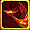
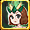
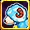

ミニペットスキル 一覧
ミニペット合成システムは2体のミニペットを合成させるシステムで、
ミニペット合成システムは複数のミニペットを編成することで得られるセット効果のようなものです。
| 基本型 | 1次進化 | 2次進化 |
残余 ボーナス |
|||||
|---|---|---|---|---|---|---|---|---|
| 精霊型 | 自然型 | 神霊型 | 精霊型 | 自然型 | 神霊型 | |||
| 火 |
火の霊 |
サラマンダー |
火 |
 ハオリン |
ケルベロス |
業火 |
ヴァウリ |
残余pt |
| 水 |
水の霊 |
ウンディーネ |
水 |
ミオリン |
セイレーン |
爆水 |
ムウリ |
残余pt |
| 風 |
風の霊 |
シルフィー |
風 |
スオリン |
 ハーピー |
烈風 |
パウリ |
残余pt |
| 大地 |
大地の霊 |
ノーム |
土 |
ダオリン |
カトブレパス |
大地 |
ゴウリ |
残余pt |
| 光 |
光の霊 |
ウィスプー |
光 |
チャオリン |
ピクシー |
雷光 |
ヌウリ |
残余pt |
| 闇 |
闇の霊 |
シャドウ |
闇 |
ゴオリン |
アビス |
黒闇 |
ダウリ |
残余pt |
| 幻 |
幻 |
イリュージョン |
幻想 |
 ザオリン |
ファントム |
幻影 |
アウリ |
残余pt |
| 突然変異 | - | 陽 |
陰 |
- | ||||
| ミニペット合成スキル | ||||||||